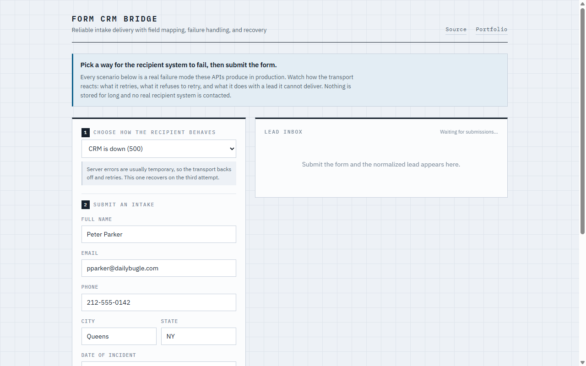

Form to CRM Bridge
Solve the shared integration once. Adapt only the part that changes.
Every new client site repeated the same capture, mapping, and delivery work, and each rebuild was another chance to drop a lead quietly. I separated the shared core from the platform-specific adapters, so adding a CRM is a contained piece of work with an obvious place to plug in.
- Role
- Sole engineer: architecture through production.
- Built
- Plugin architecture, form normalization, platform adapters, and delivery handling.
- Outcome
- Adding a destination is now one adapter rather than another rebuild, and a delivery that fails keeps its payload instead of disappearing.

The demo lets you choose the failure, then watch the transport handle it.Inside the build / Boundaries, delivery, and tradeoffs
One submission. Different destinations.
Mapping example{
"properties": {
"email": "alex@example.com",
"message": "A new inquiry"
}
}HubSpot nests contact fields under properties. The form capture and normalization stay the same; the adapter owns the destination format.
One core. A clear boundary.
Switch destinations to see how one normalized inquiry becomes three platform-specific payloads.
A boundary that removes repetition
Gravity Forms and Elementor Pro feed a canonical field set. Downstream adapters handle authentication, the destination’s request format, and the meaning of its response.
Delivery needs a recovery path
Network and server failures get bounded retries with backoff. Failed deliveries include the payload in the logs for recovery. A rejected payload needs investigation, not an endless retry loop.
An adapter has a sensible limit
Shared transport keeps the plugin compact. Retries currently happen inside the request. Higher volume would need a background queue that owns delivery separately.